Elenco
Conheça o elenco do maior filme da Marvel, Vingadores: Ultimato
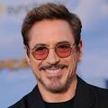
Robert Downey JR.
(Homem de ferro)
Robert John Downey Jr.
é um ator e produtor norte americano.
Seus filmes como ator principal arrecadaram mais de US$ 14 bilhões em todo o mundo,
tornando-o um dos atores de maior bilheteria de todos os tempos.
Nascimento: 4 de abril de 1965 (idade 59 anos), Manhattan, Nova Iorque, Nova York, EUA
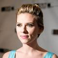
Scarlett Johansson
(Viúva Negra)
Scarlett Ingrid Johansson
é uma atriz e cantora norte-americana.
Foi uma das atrizes mais bem pagas de 2014 a 2016, com múltiplas aparições na
revista Forbes Celebrity 100 e tem uma estrela na Calçada da Fama.
Nascimento: 22 de novembro de 1984 (idade 39 anos), Manhattan, Nova Iorque, Nova York, EUA
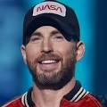
Chris Evans
(Capitão America)
Christopher Robert Evans
é um ator estadunidense.
Começou sua carreira na série de televisão Opposite Sex, e desde então apareceu
em vários filmes, sendo mais conhecido por interpretar o Capitão América no Universo
Cinematográfico da Marvel.
Nascimento: 13 de junho de 1981 (idade 43 anos), Boston, Massachusetts, EUA
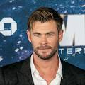
Chris Hemsworth
(Thor)
Christopher Hemsworth AM
é um ator australiano, sendo mais
conhecido por interpretar Thor no Universo Cinematográfico Marvel.
Nascimento: 11 de agosto de 1983 (idade 41 anos), Melbourne, Austrália
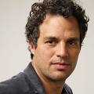
Mark Ruffalo
(Hulk)
Mark Alan Ruffalo
é um ator, cineasta, produtor e roteirista norte-americano,
mais conhecido pelo papel de Bruce Banner / Hulk no Universo Cinematográfico Marvel,
além de outros filmes como Colateral
Nascimento: 22 de novembro de 1967 (idade 56 anos), Kenosha, Wisconsin, EUA
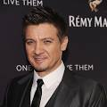
Jeremy Renner
(Gavião Arqueiro)
Jeremy Lee Renner
é um ator, produtor cinematográfico, maquiador,
e músico norte-americano, famoso por sua atuação em filmes como Hurt Locker,
Dahmer, Mission: Impossible – Ghost Protocol, The Bourne Legacy, The Town e American Hustle.
Nascimento: 7 de janeiro de 1971 (idade 53 anos), Modesto, Califórnia, EUA
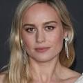
Brie Larson
(Carol Danvers)
Brianne Sidonie Desaulniers
, mais conhecida como Brie Larson, é uma atriz e
cantora norte-americana, vencedora do Oscar de Melhor Atriz.
Larson começou a sua carreira ainda criança e atuou em filmes como Don Jon e Anjos da Lei,
mas foi em 2013, com a sua atuação em Short Term 12, que ela alcançou sucesso na crítica.
Nascimento: 1 de outubro de 1989 (idade 34 anos), Sacramento, Califórnia, EUA
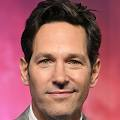
Paul Rudd
(Homem-Formiga)
Paul Stephen Rudd
é um ator, comediante, escritor e produtor norte-americano.
É conhecido pela sua participação em filmes de comédia como The Anchorman, The 40-Year-Old Virgin,
Knocked Up, Role Models, I Love You, Man, Our Idiot Brother, Wanderlust, As Patricinhas de Beverly Hills,
This is 40, Lar Ideal e admission.
Nascimento: 6 de abril de 1969 (idade 55 anos), Passaic, Nova Jersey, EUA
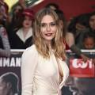
Elizabeth Olsen
(Wanda Maximoff)
Elizabeth Chase Olsen é uma atriz e produtora indicada ao Emmy,
conhecida por sua interpretação como a Feiticeira Escarlate no Universo Cinematográfico Marvel
e por seu papel no Thriller independente Martha Marcy May Marlene.
Nascimento: 16 de fevereiro de 1989 (idade 35 anos), Sherman Oaks, Los Angeles, Califórnia, EUA
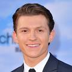
Tom Holland
(Homem Aranha)
Thomas Stanley Holland
, conhecido apenas como Tom Holland, é um ator, diretor e dublador britânico.
Ganhou destaque no cinema no papel de Lucas Bennett no filme O Impossível
e teve reconhecimento internacional ao interpretar Peter Parker / Homem-Aranha nos filmes do Universo Cinematográfico Marvel.
Nascimento: 1 de junho de 1996 (idade 28 anos), Kingston-upon-Thames, Reino Unido
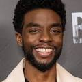
Chadwick Boseman
(Pantera Negra)
Chadwick Aaron Boseman
foi um ator, diretor e roteirista norte-americano.
Ele era mais conhecido por seus retratos de figuras históricas da vida real, como Jackie Robinson em 42, James Brown em Get on
Nascimento: 29 de novembro de 1976, Anderson, Carolina do Sul, EUA
Falecimento: 28 de agosto de 2020, Los Angeles, Califórnia, EUA
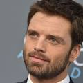
Sebastian Stan
(Bucky Barnes)
Sebastian Stan
é um ator romeno-americano. Nascido em Constança, mudou-se para Rockland County, Nova Iorque,
aos 12 anos após sua mãe casar-se com o dono de uma escola privada, na qual foi educado.
Posteriormente, cursou teatro na Universidade Rutgers, em Nova Jérsei.
Nascimento: 13 de agosto de 1982 (idade 42 anos), Constança, Romênia
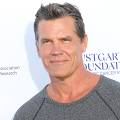
Josh Brolin
(Thanos)
Josh James Brolin
é um ator americano. Brolin é conhecido principalmente por seus papéis nos filmes The Goonies,
No Country for Old Men, Milk, True Grit, Men in Black III, Hollow Man, Gangster Squad,
Gangster Americano, Deadpool 2, Vingadores: Guerra Infinita e Vingadores: Ultimato.
Nascimento: 12 de fevereiro de 1968 (idade 56 anos), Santa Mônica, Califórnia, EUA
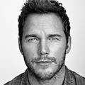
Chris Pratt
(Senhor das Estrelas)
Christopher Michael Pratt
é um ator norte-americano. É mais conhecido por interpretar Peter Quill
na franquia Guardians of the Galaxy, Owen Grady no filme Jurassic World e por dublar o personagem Mario em Super Mario Bros.
O Filme. Em 2015 foi considerado um dos 100 modelos mais influentes do mundo pela revista Time.
Nascimento: 21 de junho de 1979 (idade 45 anos), Virginia, Minnesota, EUA
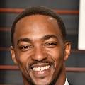
Anthony Mackie
(Sam Wilson)
Anthony Dwane Mackie
é um ator norte-americano, seus filmes de destaque são A Cor de Um Crime com Julianne Moore,
8 Mile como Papa Doc, Capitão América - O Soldado Invernal como Sam Wilson/Falcão,
Nascimento: 23 de setembro de 1978 (idade 45 anos), Nova Orleans, Luisiana, EUA
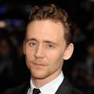
Tom Hiddleston
(Loki)
Thomas 'Tom' William Hiddleston
é um ator britânico, conhecido pelo papel de Loki no Multiverso Cinematográfico Marvel.
Em 2017 recebeu o Globo de Ouro de melhor ator em minissérie ou filme para
a televisão por sua atuação na minissérie The Night Manager.
Foi indicado ao Emmy pelo mesmo papel.
Nascimento: 9 de fevereiro de 1981 (idade 43 anos), Westminster, Londres, Reino Unido
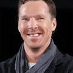
Benedict Cumberbatch
(Doutor Estranho)
Benedict Timothy Carlton Cumberbatch
é um ator britânico mais conhecido pelos seus papéis
como Sherlock Holmes na série de televisão Sherlock da BBC e como Stephen Strange/Doutor
Estranho no Universo Cinematográfico Marvel.
Nascimento: 19 de julho de 1976 (idade 48 anos), Queen Charlotte's and Chelsea Hospital, Londres, Reino Unido
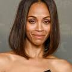
Zoë Saldaña
(Gamora)
Zoe Saldana-Perego
Nascida Zoë Yadira Saldaña Nazario, é uma atriz americana.
Após apresentações com o grupo de teatro Faces, ela fez sua estreia nas telas em um episódio de Law & Order
do ano de 1999. Sua carreira no cinema iniciou um ano depois com o filme Center Stage, seguido por Crossroads.
Nascimento: 19 de junho de 1978 (idade 46 anos), Passaic, Nova Jersey, EUA
Voltar a pagina inicial